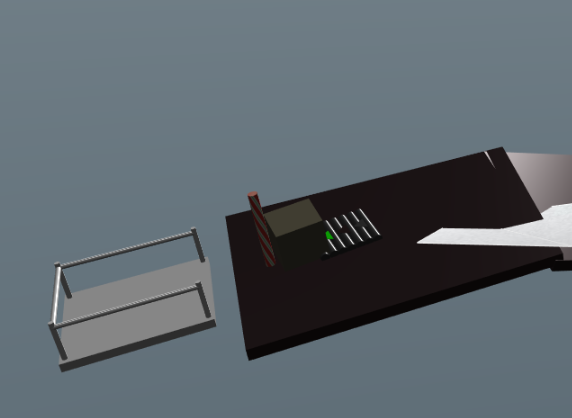
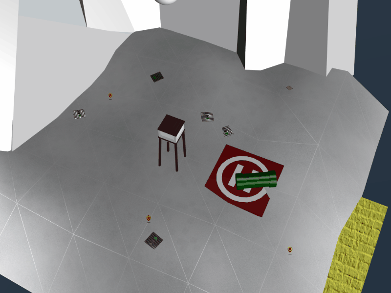
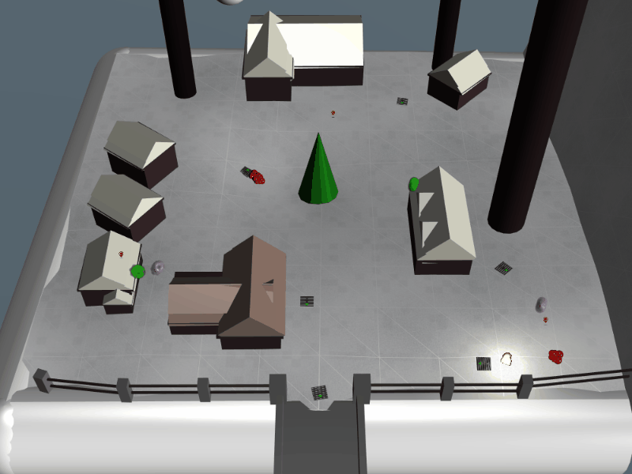
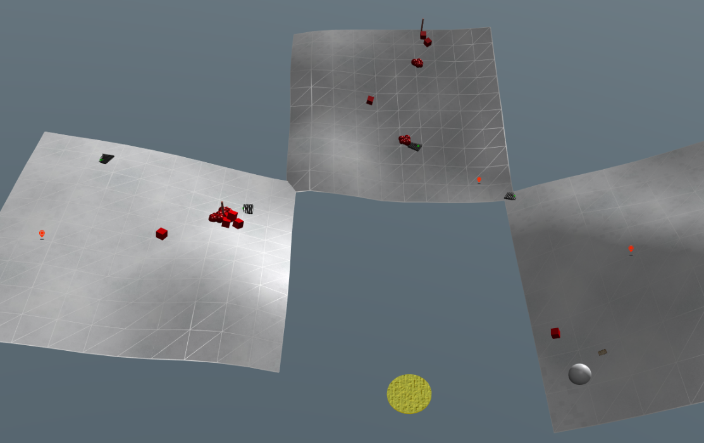
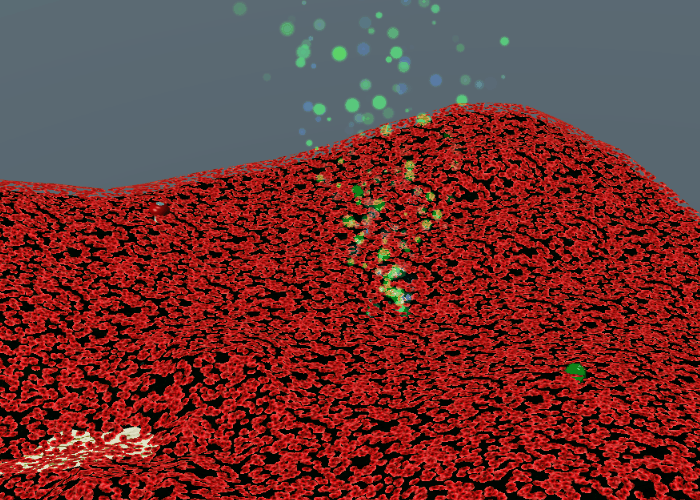
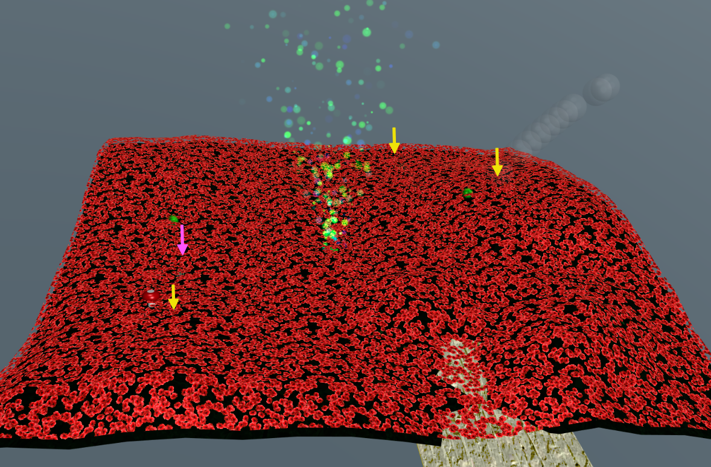
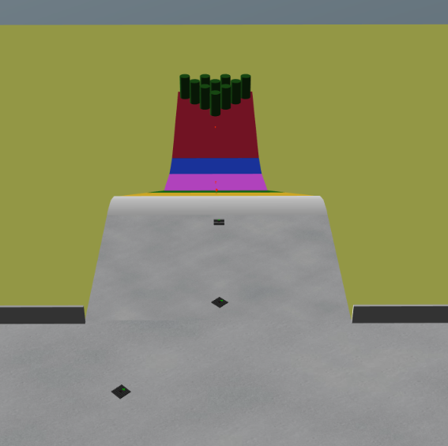
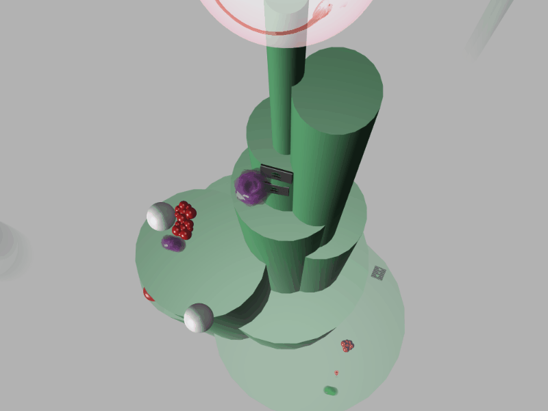

The snowball challenges are a 3D physics-based game developed with Babylon.JS. It's like a wintery Marble Madness, except you maneuver the ball by positioning a set of tools on the board that affect its speed and direction before the ball starts rolling.
There are many ways to solve each level. Below, I offer a collection of solutions and tips that might help you if you're stuck. My solutions were by no means optimized, but they got the job done!
Tip
You don't have to finish all of the objectives on each board before the next board is unlocked. Just roll a snowball over the yellow landing pad, and the next level will be unlocked. Do this for each level, and solve the terminal challenges to collect hints and tools for later in the game.
After you've collected all of the available tools, return to each level and complete the remaining objectives. Your task will be easier now that you have more tools at your disposal.
Note
Although you don't have to earn all of the achievements in a single run, it is fun (and sometimes very frustrating) to try!
Note
Videos were captured with ScreenToGif.
Winconceivable: The Cliffs of Winsanity
Instead of using the snowball to move the crate onto the lift, use a conveyor and candycane. This ensures the crate is in position before the snowball reaches the landing pad, and reduces the complexity of the snowball's path.

On the surface, this appears to be an easy level, but there ended up being a lot of moving parts in the solution.

Winter Wonder Landing

Cryokinetic Magic

There's Snow Place Like Home

Bumbles Bounce
Candycane sticks were the only tool that seemed to slow the descent of the snowballs to prevent them from knocking gifts out of bounds.

I Don't Think We're in Kansas Anymore
This level is by far the most challenging. Not only are the waypoints hidden in a sea of poppies, there is a hidden level that you can only get to by sending a snowball through what appears to be a dreaded interdimensional tornado.

In the screenshot below, the location of the waypoints are marked in yellow, and the terminal is marked with purple.

Oh Wait! Maybe we are...
This level was a relief after the complexity of the last one. Only three conveyors are needed, but key is to counteract the spin on the ball so that it goes down the hill in a straight line.

We're Off to See the...
On the last level, topple the sphere at the top of the main structure to find out who is responsible for the snowball attacks. A couple of points to keep in mind:
- The speed and angle at which a snowball enters a portal determines how it exits at the other end.
- Tools can be fastened to the sides of the structure, not just horizontal surfaces.
- The sphere has to fall out of bounds before the last snowball does, otherwise you don't earn the achievement.
